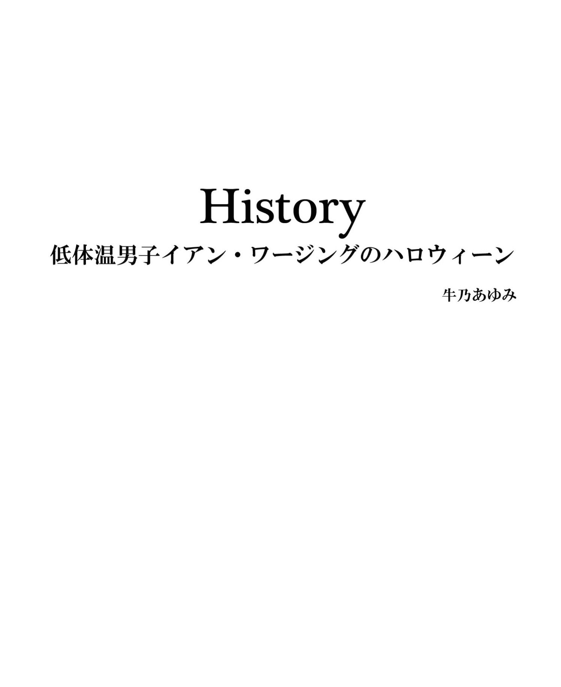

| History: 低体温男子イアン･ワージングのハロウィーン [イアン･ワージングシリーズ 2] | |
| 牛乃あゆみ | |
| SUSSANRAP (2015) | |

『だめよイアン。こういう日に一人でいちゃ。来なさいよ』
「予定はあるんだ。パーティーじゃないけど」
『ああ......そうだったんだ。それならよけいなお世話だった。よかったわね』
「...ありがと」
電話の向こうの彼女は誤解したようだ。新しい恋人ができたわけじゃない。一人で街をぶらついて、食事をして、帰って本でも読む。それだって立派な予定じゃないか？
『パーティーのあと、みんなでゴーストツアーに行くの』
「仮装したまま？」
『もちろん』
「やっぱりな」
『そっちだけでも来ない？ 彼氏を連れてきてもいいわよ。ジャック・ザ・リッパーの殺人現場を回るの』
「うわ、悪趣味」
イアンは「彼氏」をわざと無視して皮肉っぽく笑った。
『人気のあるガイドよ。リッパーではロンドン一。たぶん』
「冷やかしで殺人現場なんて」
『ああもう、だからあなたは頭が固いって言うのよ。時間が経てば歴史的事実は評価が変わる。でしょ、歴史家さん』
「嫌み言うのやめてくれない？」
イアンは苦笑しながら言った。彼女はイアンの「歴史」を知っている。その中には、歴史学の研究室を追い出されたことも含まれている。辛辣な友人はけらけらと笑った。
『リッパーはアイドルなんだから。博物館だってできたし』
「知ってるよ。記事書かされ――あれ、君だったろう。押しつけたの。その日 の 11 時までになんて無茶な......」
『あれは任せてた人に急にすっぽかされたの。でもあなたの才能を買ったのよ。実際間に合わせてくれたし』
「よく言う。ほかに頼める奴がいなかったんだろう？」
『まあね。でもほんとは好きでしょ。いい記事だった』
「まさか。あれはあれ、これはこれ。殺人は殺人......」
『あはは。わかったわかった。その手の理屈言い出すと長いからもういい。じゃね』
イアンはため息をついた。そして話がそれたまま電話が切れたことにほっとしていた。何も説明したくなかったから。ハロウィーンなんてなくなればいいのに。引き受けていた記事を納めたばかりで、暇なのがうらめしかった。仕事をしていれば気がまぎれたし、世話好きの友達への言い訳も楽だった。
外は小雨が降っていた。イアンは地下鉄に乗り、レスター・スクエアで降りて数軒の古書店をうろついた。中にはハロウィーンに因んだコーナーを作っている店もあった。アメリカの古いハロウィーン・カードや、起源から書き起こした民俗学のハードカバー。セレブの仮装を表紙にした薄い雑誌。...それらに混じって、見覚えのある雑誌があった。数年前までそこで働いていた。イアンは懐かしくなって中を開いた。自分が書いた文章が目に入った。
『...現在のハロウィーンは、アメリカで発達した祭の逆輸入である。だが元来この行事は、ドルイド教の新年の始まりの儀式に由来する。この時期は現世と冥界をへだてる門が開くとされ、悪霊や死者の霊が......』
下手くそだな、とイアンは苦笑した。やる気のないのが見え見えだ。妖精だの冥界だのというキーワードで辟易してしまった覚えがある。
一瞬、その「辟易」しながらキーボードを叩いていた時の感覚がよみがえった。部屋の空気も。席の向こうに窓があり......といっても、隣の建物の壁が見えているだけだ......同僚が置いている、枯れかけた観葉植物が視界の端にあり、まずいコーヒーの匂いが漂って......。
イアンは雑誌を閉じた。本当に過去の亡霊がよみがえるようで寒気がした。死んだ思い出がすぐそこに近づいてくるような。これからも毎年毎年、この日はこうなんだろうか。いやになる。
イアンは店の奥に入り、棚を物色するうちにちょっとした掘り出し物を見つけた。とある歴史家の古いエッセイ集で、『クレオパトラの鼻』をテーマに「歴史は偶然の産物」と主張する、ちょっと知られた論文が入っている。今夜は暇つぶしにこれを読もう。過去の亡霊の影に怯えるよりはましだろう。
カウンターで会計をしていると、ふと右手からの視線を感じた。振り向くと、通りに面したガラスドアの向こうに、長身でビジネスマン風の中年の男が立っていた。
イアンは一瞬凍りついた。――「過去の亡霊」だ――まさかこの日に？ できすぎてる。
イアンはドアから目を離して、店主が本をポリ袋にいれる動作を穴があくほどまじまじと見た。...悪い夢かもしれない。目を閉じて開けてみた。目覚めない。
...どこかで、当然なのだと感じた。再会するとしたらこの日しかない。朝から憂鬱だったし。さっきあんな古雑誌を手にとってしまったせいかもしれない。...どんどん思いつくことがバカバカしくなってくる。
イアンはもう一度振り返った。外の彼は通りに目をやり、姿勢を正して立っている。...僕が出ていくのを待っている。数年前によくそうしていたように。もっとずっと昔のことのようだ。本を抱え、覚悟をきめてイアンは外に出た。
「ハイ」
「ハイ」
「よくわかったね、これで」
イアンはひげの生えた自分のあごを指ではじいた。彼と暮らしていた頃は伸ばしていなかったし、髪はもう少し長かった。
「服とバッグでなんとなく。あと、背が高くて猫背気味だし......」
イアンは無表情にうなずいた。彼はしげしげとイアンを見て、かすかに笑顔を作った。
「ひげも悪くないね」
「嘘が下手だな。相変わらず」
「君も相変わらず......」
彼は何か言いかけてやめ、気遣うような調子で言った。
「少し痩せたね。元気か？」
彼も痩せたな、とイアンは思った。痩せた上に髪に白いものがあり、少しやつれて見える――それを見てどこかで満足している自分にあきれながら、イアンは答えた。
「元気だ」
「そうか。よかった」
彼は一人でうなずきながら足元を見た。そして意を決したように顔を上げた。
「よかったら、どこかで話さないか」
だめだ。これから友達の家に行く。ハロウィーンのパーティーだ。そのあとはゴーストツアー。そう思いながら、イアンは無愛想に答えた。
「いいよ。どこへ行く？」
イアンが彼と出会ったのは、当時勤めていた出版社のハロウィーンのパーティーだった。たしかどこかの倉庫を借りて、社内の「クリエイティブ」な連中が飾りつけた妙な会場だった。仮装をしていかなかったイアンは、入り口でゆがんだ髑髏のような仮面をあてがわれた。呼ばれたＤＪはヤケクソなのか気を利かせているつもりなのか、最近のヒット曲にＡＢＢＡやフランク・シナトラなんかを挟んでかけていた。招待客を含めて、年齢層はばらばらだった。
テーブルの上にはケータリングのオードブルと、子供じみたハロウィーンの菓子が並んでいた。血糊のような赤いジャムをたらしたカップケーキ、墓石型のクッキー、髑髏を模して目鼻が描かれたマシュマロ。そしてあちこちにかぼちゃのランタン。風船。アメリカ風の陽気さが、何か借りた服でも着ているようだった。実際大勢がレンタルの衣装を着ていた。長髪の海賊の仮装が、定番の魔女より多かった。そんな年だった。
しばらくは付き合いで仮面を被っていたが、飲み食いしにくいうえに人と挨拶できなかった。社外の招待客との顔つなぎのために来ているのに、これでは意味がない。すぐに仮面は頭の後ろに追いやられた。
小一時間のうちに、その日挨拶をしようと思っていた相手に全員会うことができた。何人か初めて会う相手にも紹介された。
それにしても海賊が多い――話をしたうちの四人が同じような海賊姿だ――イアンには元ネタがわからなかったが、相手が「当然わかるだろう」という顔をしているのであえて聞かなかった。
イアンは会場の隅に行き、壁際に寄せられている椅子のひとつに座った。中央に人が集まり、ここは人がなく薄暗くなっている。社内の折り合いの悪い連中と顔を合わせたあとで、むしゃくしゃしていた。イアンは踊っている人の群れに背を向け、血糊つきのぱさぱさしたカップケーキを食べ始めた。「ＲＩＰ」 （ Rest in peace = 「安らかに眠れ」の略。お悔やみの決まり文句）とアイシングされたチョコレートが突き刺さっている。
とにかく目的は果たした。これを食べきったら帰ろう――そう思っていると、背後から上機嫌な声がした。
「ハイ、ビリー」
振り返ると、目の前に背の高い吸血鬼が微笑んでいた。見た目は三十代。イアンより十歳くらい年上のようだ。ハンサムだが知らない顔だった。イアンはカップケーキを口元に持ち上げたまま、数回まばたきして苦笑した。
「人違いですよ」
「いや......その仮面」
吸血鬼はばつが悪そうにイアンの頭を指した。アクセントがアメリカ風だった。
「これ？」
イアンは頭の後ろに手を回し、かけていた仮面をはずして見た。壁を向いていたから、彼はこれを見て声をかけたらしい。
「名前があったんですか。入り口で渡されたんで......死神かなんかかと」
「死神だけど、ホラー映画で使われた仮面なんだ」
「それが『ビリー』？」
「ごめん、見てなかったんならネタばれだね」
「かまいませんよ、映画はもともと見ないほうで......吸血鬼の友達ですか、ビリーは」
相手のあっけにとられた顔を見て、イアンは気まずくなった。とんでもない珍説を口にしてしまったらしい。興味のないものにはとことん疎いせいで、とっつきづらい人間だとよく誤解される。...誤解ではないかもしれないが。また悪い印象を与えたかもしれないな。もしこれから仕事で縁のできる人物だったら――。イアンが一瞬のうちに将来の失敗を覚悟していると、吸血鬼は意外にもにっこりした。
「そうだね。今日は友達になるかもしれない」
笑顔が魅力的だった。イアンは一瞬どきんとして、すぐに取り繕うような笑顔を返した。吸血鬼は数秒イアンを見つめていたが、再びにっこりすると手を差し伸べて握手した。
「ジュリアン・コール。ジュリアンでいいよ」
「僕はイアン。イアン・ワージング。すみませんね、ビリーでなくて」
吸血鬼は一瞬目を丸くして、苦笑しながら首を振った。
「よろしくイアン。この会社の人？」
「ええ。あなたは？ 初めてお会いしますね」
「招待をいただいて」
ジュリアンは製紙会社に勤めている招待客だった。
「ああ、それじゃあ会わないわけだ。僕は第二編集部なので」
「...つまり、仕事抜きで話せるってことだね」
「ええまあ......」
イアンが苦笑すると、ジュリアンと名乗った吸血鬼は待てと言うように手のひらを向けた。
「何か飲まないか？ 堅苦しいのはよそう。待ってて」
ジュリアンは答えを待たずに人の波の中に消え、イアンはぽかんとして見送った。
待っている間に、イアンはカップケーキを食べ終えた。帰ろうと思っていたことは頭からきれいに消えていた。ジュリアンはシャンパンのグラスを二つ持って戻ってくると、ひとつをイアンに渡し、隣の椅子に腰かけた。
「どうも」
「あのケーキうまかった？」
「ここの食べ物は薦めませんね。まあ毎年こんなもんですけど」
イアンが肩をすくめて言うと、ジュリアンは笑った。
「はっきり言うね」
「だって本当だから」
ジュリアンはまた笑い、イアンをしげしげと見た。
「失礼」
彼はそう言って手を伸ばし、イアンの唇の端を指でぬぐった。血糊を模した赤いジャムがついていた。
「.........」
イアンは口を開けて何か言いかけたが、黙り込んでジュリアンの目を見た。ジュリアンはイアンの目を見つめ返しながら、指についたジャムをゆっくり舐めとった。
「血液型はラズベリー」
「.........」
「ごめん、はずした。キザだね」
作り物の牙を剥いて見せ、ジュリアンは照れ隠しに笑った。
イアンはぎこちなく笑って見せながら、顔が上気するのを感じた。垢抜けない吸血鬼のジョーク......じゃない。彼は試してる。誘ってる。はっきりと。
仕事関係でこういう出会いをしたことはなかった。ごく親しい友人にしか、ゲイであることは知られていない。だが同類には「一目でわかる」と言われたことがあるから、彼もそうなのだろう。
ジュリアンはイアンのタイプだった。年上で、態度が紳士的――黒いマントを羽織った吸血鬼の衣装のせいでことさらそう見えた――そしてブラウンの髪は短めで、お世辞抜きにハンサムだった。身長はイアンと同じくらい高く、体つきはイアンより逞しい。
...結婚指輪をしているだろうか。グラスを持ち上げたジュリアンの左手の指を、イアンは観察した。身についた悲しい習性だ。一夜の遊びのつもりの既婚者にはいやな思い出があった。ありがたいことに、吸血鬼の指に指輪はなかった。ここには仕事で来ているのだから、既婚者ならわざわざはずしてこないだろう。
ジュリアンはシャンパンをすすると眉をしかめ、内緒話をするように顔を近づけた。
「言っちゃ悪いけど、酒も上物とは言いがたいね」
ジュリアンはそう言うとまた笑い、部屋の中央でライトを浴びて踊っている連中の仮装をネタに話し出した。たくさんいる長髪の妙な海賊は、今年流行った映画のキャラクターでジャック・スパロウというのだとか、自分が着ている吸血鬼の衣装は、ユニヴァーサル映画が最初に作ったドラキュラ伯爵の衣装を忠実に再現したものだとか。そして自身についてはイアンの予想通りアメリカ人で、ロンドン支社に転勤になったばかりだと言った。打ち解けて、話は幼少時の思い出になった。
「ハロウィーンには親のおもちゃみたいに飾られてたよ。君は？」
イアンは首を振った。
「うちのほうではハロウィーンは......盛り上がったのはボンファイアかな」
「ああ、人形を焼くやつ？ すぐだっけ」
「十一月五日」
「あれなんの人形？」
「ガイ・フォークスって言って、昔国会議事堂を爆破しようとした男」
「あ、それ聞いたことあるな。でも英雄だろう？」
「まあ、見方によっては......」
イアンの耳には、耳障りな音楽も人々のざわめきも聞こえなくなっていた。ジュリアンの目を見て、しゃべっている口を見て、笑顔を求められているパートで笑って見せた。話の中身はどうでもよかった。これは会話ではない。求愛行動だ――手探りでヒントを探し、好意のジェスチャーを見つけると、それを受け取ったことをしぐさや表情で返す。そして自分も好意のサインを出す。二人は忘れられたような倉庫の一隅でやりとりを繰り返し、互いに確信を深めていった。ここが仕事がらみのパーティー会場でなかったら、話はもっと早かったかもしれない。
イアンが仕事で仕入れた話――ハロウィーンの起源になったドルイドの祭のかがり火は、魔除けの火として住民に分け与えられていた――を話し終えると、にこにこして聞いていたジュリアンが、少し言い淀んでから小さな声で言った。
「あの、よかったら朝食を食べない？」
そろそろ外へ出るのは自然な流れだったので、イアンは慌てなかった。だが言い間違えたのだと思って苦笑した。
「夜食でしょ？」
「いや、朝食を。ええと、つまり......」
「...あー......」
「...失礼かな。ごめん、君がいやでなければ。こっちの......なんて言うんだ？ 流儀がまだよくわからなくて」
イアンは息を呑んでジュリアンの目を見つめた。ジュリアンは思い詰めたような顔をして、イアンを見返していた。
ずっとあとにイアンは、ジュリアンからこの時の自分の様子を聞いた。意味が通じていないように見え、「困惑の表情」を浮かべていたという。イアンはそうしたつもりなどまったくなかった。意味はわかったし、誘い方がぎこちないのもむしろ嬉しかった。イアンは彼に惹かれていた。ただ、そんな感情を表すことに慣れていなかった。
カウンターでコーヒーを買ってテーブルにつき、イアンは窓の外を見た。雨は止んだが、もう暗い。ジュリアンはイアンがテーブルの隅に置いた包みを見た。
「何を買ったの？」
「言ってもわからないと思う......『クレオパトラの鼻』」
「ジョン・バグネル・ベリー？ 覚えてるよ。君に聞いたことは」
イアンは少し驚いたようにジュリアンを見たあと、ゆっくりうなずいた。
「僕も君に聞いたことは覚えてる。グレタ・ガルボの本名とか」
「役に立たないことばかりだ」
「ベリーも君の役には立たない」
ジュリアンは寂しそうに微笑むと、テーブルの上で両手を組み合わせてうつむいた。
「...話したかった」
「電話があるのに」
「番号を変えたろう？」
「一ヶ月位そのままだった」
「...じゃあその直後にかけたんだな。気持ちの整理がつくまで時間がかかって――」
イアンは苦笑した。一ヶ月で整理がついたのか？ こっちはまだ引きずってる。
「何を話したかったんだ？ 古い酒が惜しかったとか？」
別れる時に滑稽な取り合いを演じたワインを皮肉めかして言うと、今度はジュリアンが苦笑した。
「まだあるの？」
「とっくに飲んじゃったよ。ピザといっしょに」
ジュリアンはあきれたようにイアンを見た。
「そんな飲み方するしろものじゃない」
「そうかな」
イアンが窓の外を見ながら平然と言うと、ジュリアンはあきらめたようにうなずいた。
「...君はもともとそんなにこだわってなかったな。奪い取ったのは当てつけだろう？」
「まあ、君がそう思う理由はあるだろうね」
「ああ君は......変わらないな。ほんとに」
ジュリアンはカップに目を落とし、深く息をつくと小さな声で言った。
「君に声をかける前に......言い争ってるのを見た」
「本屋で？ 言い争ってなんかいない」
「いや、パーティーでだ。君と初めて会った」
「ああ......」
イアンは覚えていた。言い争いをしていた相手は、日頃から犬猿の仲の営業部の精鋭だった。彼はのちにイアンが会社を辞める原因のひとつになるのだが、その時はまだそんなことは予想もしていなかった。
「気難しそうだと思った。でも目が離せなくなったんだ。...一目惚れだった」
「よくそんなこと言えるな」
「ああ、僕はそういう男なんだ」
こういうところが苦手だった。くさい台詞を堂々と言うところが。...それでも当時は嬉しかったことを、イアンは思い出した。照れくさくはあっても、いやなことは言われなかった。ジュリアンはテーブルに目を落としてつぶやいた。
「君を愛してた。本当に」
イアンは空気が冷えるのと、胸の中の火がかすかに熱を増すのを同時に感じた。愛してた。過去形の告白。
「...僕もだ」
ジュリアンが顔を上げ、イアンを見つめた。思い詰めたような潤んだ目つきは、いつか見たものだ。君を抱きたい。口に出さずにそう言っている。まるで初めて会ったみたいに。
シャンパンにほどよく酔って、二人は仮面と吸血鬼の衣装をつけたまま、キャブでジュリアンのフラットに向かった。シックで趣味のいいインテリアを揃えていた。中に入ると、ジュリアンはグラスを出してウイスキーを注いだ。イアンはいつもの癖でたばこを出した。
「吸っていい？」
「ああ......」
ジュリアンは灰皿代わりにキッチンから小皿を持ってきた。彼は吸わないのだと察して、イアンは火をつけるのをやめ――そのまま六年ほどあとまで禁煙した。
結局ジュリアンが出したウイスキーには手をつけないまま、二人はベッドに直行してシャツを脱いだ。ジュリアンは肩幅が広くて、色の白いイアンとは対照的に、健康的に日焼けしていた。ジュリアンはイアンの肩に腕を回すと、イアンの顔を覗き込んだ。
「冷たいね。寒かった？」
「少し。でも冷たいのはいつもだから。気にしないで」
「いつも？」
「冷え性っていうか」
「ああ、握手した時も冷たいと思った」
ジュリアンはイアンの手を握ると、温めるように親指で手の甲を撫でた。彼が緊張しているのがわかり、イアンは照れくさそうに微笑んだ。ジュリアンはイアンの髪を撫で、静かに行儀のいいキスをした。そして顔を離して、イアンの顔をいくぶんうっとりした様子で眺めた。
「きれいな眼だね」
イアンはくすぐったいように苦笑した。歯が浮くような台詞だ。アメリカではこれが普通なのか？ それとも彼が変わってるのか？ ジュリアンは戸惑った顔をした。
「おかしい？」
「おかしくない。でももういいよ」
ジュリアンとは対照的に、イアンは自分でも不思議なほどリラックスしていた。
「何が？」
「あんまり気を遣わなくていいよ。べつにバージンじゃないし、お姫様でもないし」
ジュリアンは照れたように微笑んだ。
「お姫様だよ。僕には」
彼はイアンをゆっくりとベッドに押し倒すと、今度は深く口づけした。イアンは目を閉じた。うっすらと、安物のシャンパンの味がした。ジュリアンは何度も口づけしながら、イアンの髪に指を差し入れた。黒くつややかな髪が気に入って、何度も指で梳いた――これは彼の癖になった。そして小声で言った。
「やっぱり寒そうだ。ヒーターをつけるよ」
イアンはジュリアンの首に腕を巻きつけてささやいた。
「すぐ暑くなる」
言葉のとおりに、彼に触れられたイアンの白い肌はすぐに火照りだした。ジュリアンはイアンの体中にキスして、すみずみまで探った。型どおりで、間違いがなかった。イアンが息を乱すと、まるで子供を安心させるように背中を撫でた。すべてをゆだねても大丈夫だ。イアンはそう感じ、実際そうした。初めて会った相手だという気がしなかった。
ジュリアンは行為を始めると無口で、最中に話しかけられるのは興ざめだと思うイアンにはそれも心地よかった。会話の代わりに何度もキスをして、息遣いで互いの意思が通じた。どうしたい？ それでいい。そのままでいい――快感がイアンを貫いた。吸血鬼の衣裳が散らばった部屋に、ジュリアンの荒い息とイアンの甘いあえぎが低く響いた。
――最高だった。イアンはつかんでいた枕を放し、けだるい体で寝返りを打って、ジュリアンに手を伸ばした。熱い手がそれを包み込み、イアンの潤んだ目がジュリアンの視線と絡み合った。イアンはジュリアンの首を片手で抱き寄せると、甘えるようにキスをした。ジュリアンはイアンの髪に指を絡め、まだ息をはずませながら聞いた。
「...また会える？」
「は？」
イアンは一瞬固まった。なんなんだ。今終わったばかりで？
「...もう帰ってほしいわけ？」
「いや、そうじゃなくて......ごめん、気が焦って」
ジュリアンは苦笑し、髪を撫でながら、イアンの顔をじっと見つめた。
「...僕らは絶対合う。その、君がいやでなかったならだけど。なんていうか......また君と......会いたいんだ。君はどう？」
イアンは数回まばたきして言った。
「今すぐはどう？」
＊ ＊ ＊
イアンが男性に惹かれていることを自覚したのは十五の時。生まれ育った町では、それを明かすことや、ましてや思いを相手に打ち明けることなど不可能だった。年上が好きで、初めての片思いの相手は物理の教師だった。妹にボーイフレンドができるのを見てひそかに嫉妬した。彼女はその過程で泣いたり怒ったりしていたが、自分に比べたらなんの苦労もないように思えた。それでも、そのうち女の子を好きになるかもしれないと思っていた。
そうこうするうちに、同じクラスの女子生徒に告白された。変われるかもしれないと思ってつきあった。やがて苦痛になり、言い繕った別れの理由でかえって彼女を傷つけ、後悔した。そして変われないのだと絶望した。このまま嘘を重ねて生きていくくらいなら、死んでしまおうか。なかば本気でそう考えた。
大学に進み、家族と離れてロンドンで暮らすようになり、やっと自分を出せるようになっていった。自分はおかしいのではなく、そういう人間はたくさんいるのだと。そしていつか「その人」と出会えたら――相思相愛になれたら。それがゴール。すべてが解決。そう思っていた。
二人は互いの仕事や趣味を急速に学んだ。半年ほど経って、ジュリアンが一緒に暮らそうと言うと、イアンはすぐに承知した。
イアンはテーブルの上のコーヒーを見ていた。やがてふっと視線をはずして窓の外を見ると、何でもないことのように聞いた。
「彼女は元気？」
ジュリアンは拒絶のサインを受け入れて、かすかに肩を落としてため息をついた。――あるいは安心したのかもしれない。彼は礼儀と考えたのではなかろうか。「今も君を抱きたい」と態度に出すことを。...安っぽい、傲慢な思いやり。彼らしい――イアンはそう思った。ジュリアンはゆっくりうなずいて言った。
「ああ、元気だよ」
「よかった。彼女はいい人だから」
「ああ」
「陳腐なこと言うけど、泣かせちゃだめだ」
――僕のようには、とは言わなかった。それでも言い過ぎだった。ジュリアンは傷ついた顔をした。
「...後悔してるんだな」
イアンは肩をすくめた。
「僕らは浮かれてたんだ。出会いが奇跡だと思った。うまくいきすぎて」
「...それが君の記憶なのか？ 僕らのことは。勘違いと失敗の記憶？」
「.........」
「...僕にとっては違う。僕には......」
ジュリアンはうつむいて黙り込んだ。しばし沈黙が続いた。
失敗？ そうだ失敗した。それは僕で、君じゃない――イアンはジュリアンを眺めながら思った。
僕が男を好きなのが異常でないように、君が男も女も好きなのは異常じゃない。先に変わったのは僕だ。君と暮らしていると打ち明けられないまま、久しぶりに故郷に帰った時に。
妹が結婚し、「普通の人々」の「普通の幸せ」を見た。すべてがそらぞらしく見える自分がいやになった。顔に笑顔を張り付かせて、そこにいるすべての人に自分を偽った。耐え難かった。...そして僕の中で、君がその元凶になった。自分でもなぜだかわからない。君という存在を受け容れられなくなった。そして理由も説明できないまま、君を否定し遠ざけた。
そうしたところで何になったろう？ 僕が否定していたのは僕自身だ。...そして僕が変わらなければ、たぶん君は裏切りはしなかった。少なくともあんなふうには。
イアンが言えない言葉を反芻していると、ジュリアンが顔を上げて聞いた。
「...今はどこに住んでるんだ？」
イアンはジュリアンを見たまま数秒黙っていたが、首を振ってうつむいた。
「言いたくない」
「いやならいい。でも、何か困ったことがあったら......」
「やめよう。無理だ」
「え？」
イアンはうつむいたまま言った。
「僕には無理だ。別れたあともいい友人だとか、そういうの」
「...わかった」
ジュリアンが立ち上がると、イアンが顔を上げた。
「ジュリアン――」
彼が振り返った。イアンは彼を、目に焼きつけるように見た。白髪混じりのハンサムな顔。温かい、大きな手。その手を背中に回されると安心したものだった。
君のくさい台詞は僕が聞きたかったものだ。いつも君は、僕の望みを先回りして叶えようとしただけだ。今日だってそうだ。
―― （ めちゃくちゃにされたいよ ）。
声に出さずにそう言うと、目が潤みだした。あわてて別の言葉を口にした。
「元気で」
ジュリアンは静かにうなずいた。
「ああ、君も」
＊ ＊ ＊
イアンは外で食事をする気になれず、そのまま家に帰った。キッチンの棚からシリアルを出し、買ってきた本を開いた。収められたいくつかの論文の中で、著者は繰り返し「歴史は偶然の産物」と説く。この説は嫌いだ。もしこうだったら、もしああだったらと未練がましい。...わかってる。自分だって未練がましい。もしああしなかったら......と何度も何度も考えた。
イアンは立ち上がり、服を入れずにがらくたを入れている小さなクローゼットをひっかき回した。引っ越してから開けていない段ボール箱がいくつかある。そしてその中から、古いワインのボトルを取り出した。
彼には嘘をついた。飲めるもんか、こんなもの。捨てることもできずに、ずっとしまい込んでいた。まるで触りたくない遺品みたいに。
イアンはボトルを持ってキッチンに戻ると電話をかけた。
「もしもし？ 僕だ。イアン。うん。これから行ってもいいかな。え？」
電話の相手は騒がしいところにいるらしい。
「予定が変わったんだ」
電話の向こうの彼女は何かを察し、声が変わった。どうしたの。何かあったの？
...彼女とはいい友達だ。イアンが彼と別れた時は、引きこもっていたイアンに毎日電話をくれた。彼女が失恋した時は、イアンが一晩中愚痴につきあった。このままお互い一人で年をとったら、一緒に住もうね。泣きながらそう言った彼女は、一ヶ月も経たないうちに次の恋人を作った。そう頻繁には会わないが、最高の友達だ。
「そうじゃないよ。気が変わっただけ。...うん。ははは、いいよ。リッパーもつきあうよ。ああ、仮装の用意はないけど――」
イアンはテーブルの上に目をやった。
「ちょっといいワインを持ってくから」
＊ ＊ ＊
地下鉄の駅へ行く途中で、仮装した子供のグループとすれ違い、よそ見をして走ってきた子供がイアンの脚にぶつかった。イアンの腰の高さほどの、小さな男の子だ。子供は目を丸くしてイアンを見上げた。肩から墓石を生やし、顔に「ＲＩＰ」とペイントしている。親が楽しんで仮装させた様子が目に浮かんだ。
子供が叫んだ。
「トリック・オア・トリート！」
お菓子をくれなきゃいたずらするぞ。
「...トリック」
イアンが答えると、子供はあからさまに眉をしかめた。片手でワインを抱えていたイアンは、空いたほうの腕をおどけたように広げて見せた。
「お菓子は持ってない」
子供は一瞬唇をとがらせ、思い切り舌を出して見せるとさっと走り去った。イアンは苦笑して見送り、子供たちを引率していた夫婦がイアンに手を振った。イアンは手を振り返し、向きを変えて歩き出した。
安らかに眠れ 。
暗唱するように頭の中で繰り返し唱えた。なぜだか気持ちが軽くなってくる。
突然、背後から腿のあたりを叩かれた。振り返ると、さっきの墓石の子供がいた。
「なに？」
子供はむすっとしたまま、黙ってチョコバーを差し出した。イアンはきょとんとして受け取った。
「くれるの？」
子供はまじめな顔でうなずいた。
「.........」
イアンは思わず微笑んだ。この子は施しをしているつもりだ。ハロウィーンの夜に、お菓子一つ持っていない哀れな大人に。
「ありがとう」
墓石はまじめな顔のままうなずくと、くるりと身を翻して走り去った。
イアンは立ち止まったまま、しばらくチョコバーの派手な包みを眺めていた。シルバーの地に赤と黄色の星が安っぽく飛んで、陽気な書体が踊っている。祭の夜の浮ついた空気によく合っていた。アメリカ風に、大人も子供のようにはしゃぐ夜だ。――彼とはそんな夜に出会った。そして数年幸せに暮らした。
イアンは包みを破り、一口かじって歩き出した。背を向けて逃げれば追ってくる過去。消えはしない過去。裁きようがない過去の自分。イアンはそれを振り返り、正面から見据えた。
思ったより小さく見える。過去の思い出とその中にいる彼が、そしてその頃の自分自身が、セピア色めいた柔らかい空気の向こうに沈んだ。イアンは借り物の言葉をつぶやいた。
安らかに眠れ 。
陽気な魔女やゾンビたちとすれ違う。オレンジ色の光と闇の中で門が開き、葬られたものたちが、現世に現れ微笑むことを許される夜。砂糖菓子の甘さの中に慰撫される夜。
彼の歴史が、喧騒の中でかすかに意味を変えた。
【終】
Website: http://sussanrap.jimdo.com/ （電子書籍お試し読みの他、ウェブ小説やコラム、ブログなど読み物を詰め込んだサイトです）
Amazon 牛乃あゆみ著者ページ
■ SUSSANRAP 出版案内 ／ kindle editio n ■
・イアン・ワージング シリー ズ( マイルドＢＬ）
ネガティヴ・ケイパビリティ：絶食系男子イアン・ワージングのレイライン紀行
ギャザリング･ストーム：さむがり男子イアン･ワージングのゴースト修行
◆その他小説
追憶のシャーロック・ホーム ズ : ワトスン博士最後の告白 （耽美系パスティーシュ）
王殺し （微耽美小説）
脳人形の館 （微耽美小説・美老人萌えマイルドホラー／ピーター・カッシング トリビュート）
◆漫画（ほのぼのコメディ シャーロック・ホームズパロディ）
【英語版 】 Space Detective Holmes: Squid & Watson